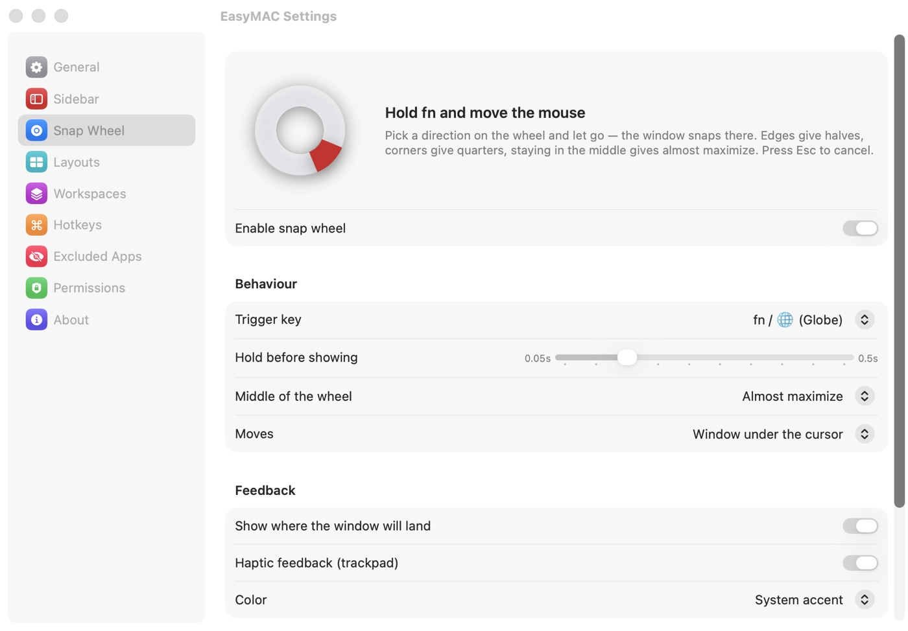
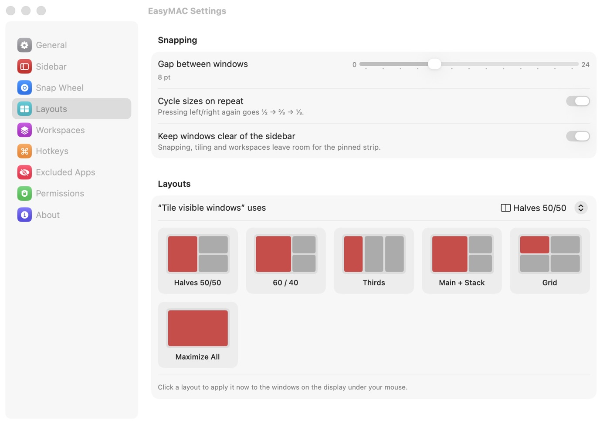
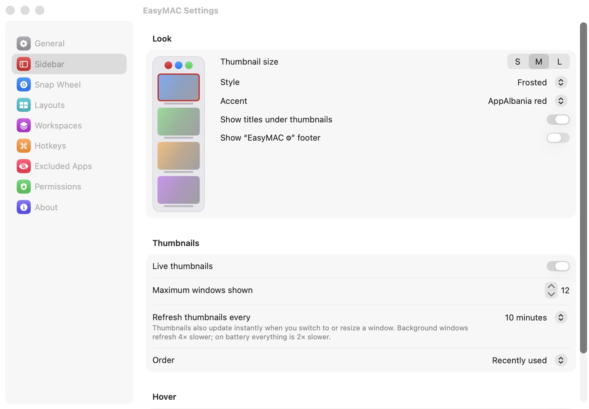
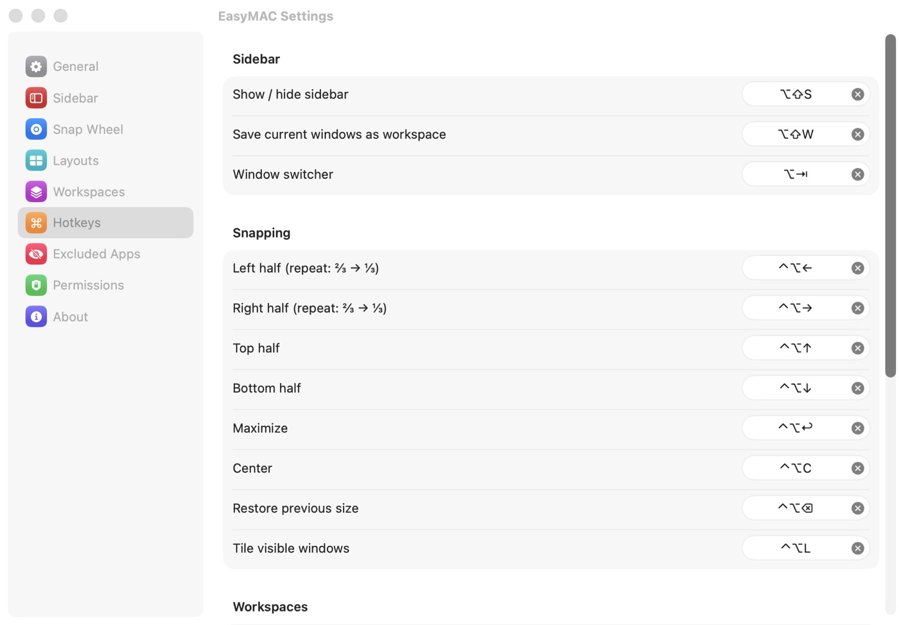

A compact strip of live window thumbnails, one-click project workspaces and a snap wheel you drive with fn and the mouse. Built natively for macOS by AppAlbania.
EasyMAC replaces Stage Manager's bulky strip with something compact and fast, and adds the tools power users usually need three apps for.
Small live thumbnails of every open window on the screen edge. Click to focus the exact window, even in Chrome or VS Code with dozens open.
Hold fn, nudge the mouse toward a side or corner, let go. Halves, quarters or maximize, with a preview of where the window lands.
Save the apps and window positions you use for a project. One click or ⌥1 brings the whole layout back, opening apps if needed.
50/50, 60/40, thirds, main + stack and grid — for all visible windows at once. Windows always leave room for the strip.
Snap with ⌃⌥ + arrows (repeat for ⅔ and ⅓), cycle windows with ⌥Tab, toggle the strip with ⌥⇧S. Every shortcut is yours to change.
Downloads, Desktop and a Tray one click away. Drag files straight into Chrome or WhatsApp, Space to preview, float a list on top of every app.
Press ⌥⇧V for a bar of everything you copied — text, links, images, files. Click to paste. Password managers are skipped.
Volume and brightness live in the notch. Keep your Mac awake for a while or with the lid closed — a small ring by the notch shows the time left.
Pure Swift, Liquid Glass on macOS 26, starts at login, ~1–3% CPU while visible and nothing while hidden. Updates install themselves.
Each lives as a small icon in the menu bar ( ), in the strip, or in the notch — turn every one on or off in Settings.
Press ⌥⇧V or click : a bar with everything you copied — text, links, images, files — with the app it came from. Click a card to paste it, search, scroll with the wheel. Keep it while EasyMAC runs or up to 30 days. Password managers are skipped.
Downloads, Desktop or any folder — open them in place, step into sub-folders, select several files and drag them straight into Chrome, WhatsApp or Mail. Space shows a Quick Look preview. Drop files on the Tray — or just drag them onto the notch — to keep them handy.
Click the icon in the menu bar for your Tray and folders right under it, or press ⤢ to float a list as a small glass window over every app — it stays put until you close it and remembers where you left it.
keeps your Mac awake for 10 minutes to 5 hours or indefinitely: keep the screen on, let only the screen sleep, or keep working with the lid closed. A small ring next to the notch shows the time left; zzz means your Mac may sleep.
The volume, mute and brightness keys show a slim bar right in the notch instead of the big system popup.
macOS ties mouse and trackpad scrolling together. EasyMAC lets your mouse wheel scroll the classic way while the trackpad keeps natural scrolling.
Drag any file up to the notch and it opens a drop shelf: let go on the left to send it with AirDrop to your iPhone or another Mac, or on the right to keep it in your Tray. Click the notch any time to open the Tray — it stays on top of every app until you close it.
No more dragging windows to pixel-perfect edges. A ring appears right where your cursor is.

Working on RentalX in the morning and client sites in the afternoon? Save each setup once.

Thumbnail size, style, refresh rate, edge, display, auto-hide, excluded apps, every shortcut. Open EasyMAC again any time to tweak it.


| Snap wheel | hold fn + move mouse |
| Show / hide the strip | ⌥⇧S |
| Restore workspace 1–9 | ⌥1 … ⌥9 |
| Save current windows as a workspace | ⌥⇧W |
| Window switcher (release ⌥ to focus) | ⌥Tab |
| Snap left / right (repeat: ⅔ → ⅓) | ⌃⌥← → |
| Snap top / bottom | ⌃⌥↑ ↓ |
| Maximize · Center · Restore size | ⌃⌥↩ · C · ⌫ |
| Tile all visible windows | ⌃⌥L |
| Clipboard history | ⌥⇧V |
Every version, newest first. Installed copies update themselves — or download any version below.
Open the DMG and drag EasyMAC into Applications.
Allow it on first launch — this lets EasyMAC focus, move and resize windows.
Optional, only for live thumbnails. Skip it (or turn thumbnails off in Settings) and you see app icons — no captures, no extra CPU.
EasyMAC lives in the menu bar, starts at login and updates itself.
Set System Settings → Keyboard → “Press key to” → Do Nothing, or press “Set to Do Nothing” in EasyMAC → Settings → Snap Wheel. You can also switch the trigger to right ⌥, ⌘ or ⌃.
Yes — EasyMAC replaces it. System Settings → Desktop & Dock → Stage Manager off.
No. Thumbnails are captured and shown locally only. EasyMAC has no accounts, no tracking and only contacts appalbania.com to check for updates.